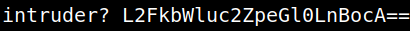
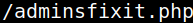
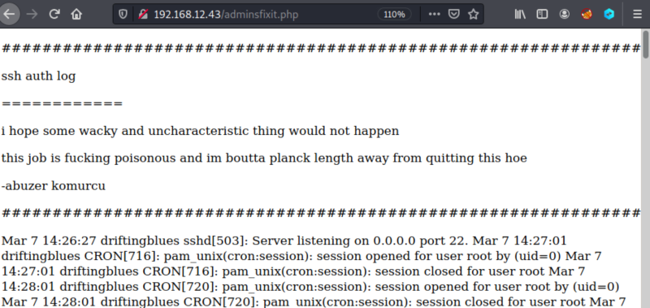
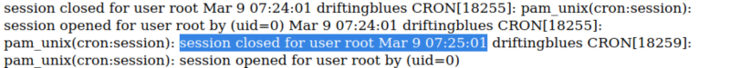

3.2 Decode message
1. Decode the message from the previous step.
message =
aW50cnVkZXI/IEwyRmtiV2x1YzJacGVHbDBMbkJvY0E9PQ==$echo aW50cnVkZXI/IEwyRmtiV2x1YzJacGVHbDBMbkJvY0E9PQ== | base64 -d
Output:

2. Decode the second part of the result
L2FkbWluc2ZpeGl0LnBocA== (It starts with a space)/$echo L2FkbWluc2ZpeGl0LnBocA== | base64 -d
Output

3. Visit http://192.168.12.43/adminsfixit.php.


It seems this page has the SSH logs.
If you